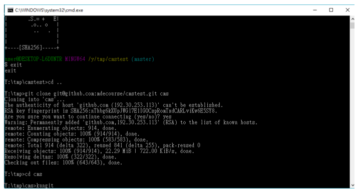

Week4~9
Week4 :
1.先到老師網站載程式
2.把nodejs丟到data裡
3.設定ungit路徑
4.建立設定檔
5.Clone 倉儲

6.輸入kungit叫出網頁
7.建立完成
8.利用下面跳出的指令把windows弄掉
9.利用vi把helper=manager刪掉
10.利用J健跑最下面，在案dd把那一行刪除掉
11.建立對github的連線
12.建立對github的連線
13.建立sh並建立鑰匙
14.建立ssh
15.建立完成
16.建立成功會有兩把鑰匙
17.在帳號裡建ssh
18.
19.

20.
-----------------------------------------------------------------------------------------------------
Week5 :
這週主要在研究vrep內容，因為之前都沒接觸所以摸起來花了相當多時間，也試著做實驗任務
-----------------------------------------------------------------------------------------------------
Week6 :
編輯小組W4~W6投影片
https://mdekmol.github.io/cd2019b-task1-2019cdb_t1_g4/reveal/index.html#/
可攜系統製作影片
建立個人倉儲 https://github.com/40423158/2019cd
-----------------------------------------------------------------------------------------------------Week8 :
小組投影片版面更新增加新的W8~W9
Building a clean model tutorial模型繪製
補上次BubbleRob tutorial
這個是上週禮拜五課堂上錯誤版
經過在家重作正常版
-----------------------------------------------------------------------------------------------------
Weekly Progress << Previous Next >> Week10~18